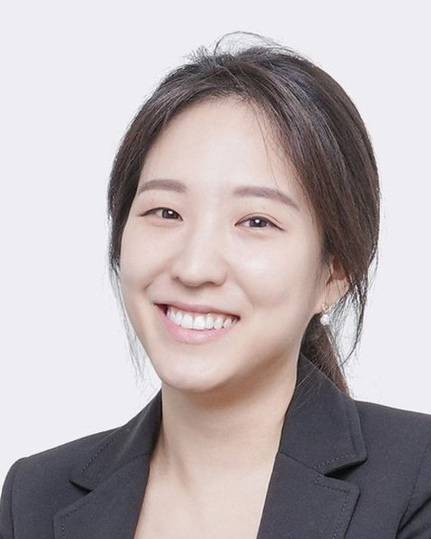

Team
18 people
Contact
Prof. Seung Ah Lee: seungahlee@snu.ac.kr +82-2-880-7153
Laboratory: Bldg. 302, Rm. 411A. Office: Bldg. 301, Rm. 1503. Department of Mechanical Engineering, Seoul National University, 1 Gwanak-ro, Gwanak-gu, Seoul 08826.
Members' email addresses are on their cards: select a portrait.
Members
Faculty and researchers
4
Seung Ah LeeGroup LeaderSeung Ah Lee 이승아
Associate Professor, Department of Mechanical Engineering
Research interests
Computational imaging and microscopy, Biophotonics and in vivo imaging, AI for computational imaging and imaging-system design, Low-cost imaging systems
Nicholas J. Durr
Visiting Faculty
Research interests
Computational Biophotonics, Optics and Microscopy, Endoscopy, Medical Devices
Yong Guk Kang
Research Professor
Research interests
Computational Imaging, Interferometric Imaging, Biomedical Imaging
Changyoon Yi
Postdoctoral Fellow
Research interests
Laser Speckle Imaging, Biomedical Imaging
Graduate students
10Jaewoo Jung
MS/PhD Student
Research interests
Deep Learning, Lensless Imaging
Taeyoung Kim
MS/PhD Student
Research interests
Lensless Imaging, Computational Imaging, Optimization
Hyesuk Chae
MS/PhD Student
Research interests
Lensless Imaging, Computational Imaging
Joonsik Park
MS/PhD Student
Research interests
Lensless Imaging, Computational Imaging
Donggeon Bae
MS/PhD Student
Research interests
Deep Learning, Biomedical Imaging
Hyo Jun Ahn
MS/PhD Student
Research interests
Computational Imaging, Lensless Imaging, Laser Speckle Imaging
Hyeonyong Lee
MS Student
Research interests
Computational Imaging, Lensless Imaging
Hojin Chang
MS/PhD Student
Research interests
Computational Imaging, Lensless Imaging, Laser Speckle Imaging
Undergraduate interns
4Doyeon Yoon
Undergraduate Intern
Research interests
Computational Imaging, Deep Learning
Yena Cho
Undergraduate Intern
Research interests
Computational Imaging, Lensless Imaging
Jeongmin Lee
Undergraduate Intern
Research interests
Computational Imaging, Lensless Imaging
Sangjoon Lee
Undergraduate Intern
Research interests
Computational Imaging, Deep Learning
Alumni
7 alumni
- Kyung Chul Lee M.S. & Ph.D. Student, Ph.D. in EE, Yonsei University (2025)Postdoctoral Fellow, University of Michigan BMEkyungchul.eee@gmail.com
- Kyungwon LeeM.S. & Ph.D. Student, Ph.D. in EE, Yonsei University (2025)Curiosis Inc.kyung1.2@snu.ac.kr
- Nakkyu Baek M.S. & Ph.D. Student, Ph.D. in EE, Yonsei University (2026)Visiting Researcher, Imaging Intelligence Labwhitenk@snu.ac.kr
- Namhoon Kim Undergraduate Intern, B.S. in EE, Yonsei University (2024)Ph.D. Candidate, Georgia Tech ECEetoile7@yonsei.ac.kr
- Hansol Yoon ResearcherPh.D. Candidate, Georgia Tech ECEbigpine.yoon@gmail.com
- Yujin Lee Undergraduate Intern, B.S. in EE, Yonsei University (2024)Ph.D. Candidate, Cornell CSyl3836@cornell.edu
- Se Hee LeeUndergraduate Intern, B.S. in CS, Yonsei University (2020)Line Corp.sechiyo97@yonsei.ac.kr
Gallery
Conferences, graduations and lab events. Select a photo to view it larger.
87 photos
Open positions
Optics, microscopy, computational imaging and related fields. Backgrounds in ME, EE, CS or Physics.
- Undergraduate InternsAvailable projects
- Graduate Students
- Postdoctoral Fellows
Email a resume to seungahlee@snu.ac.kr